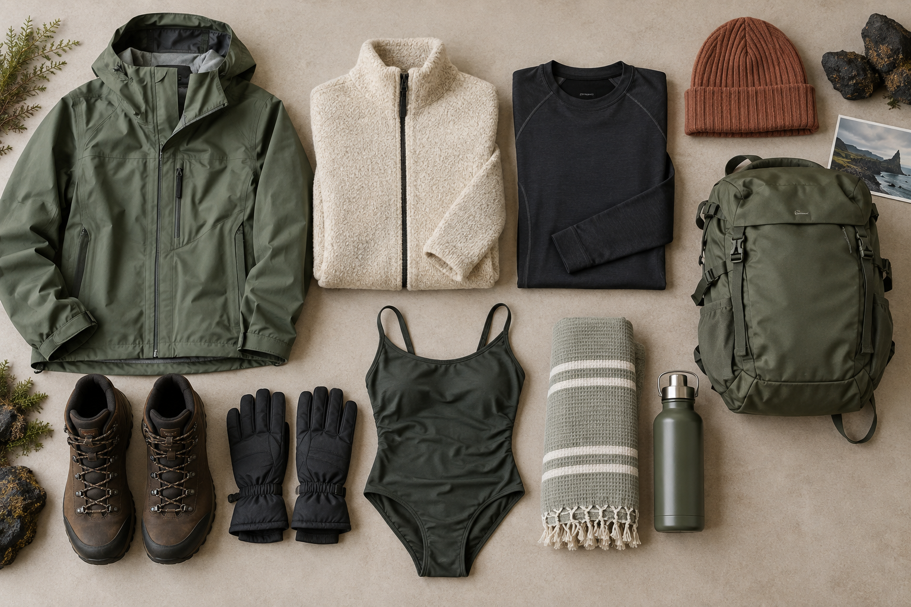
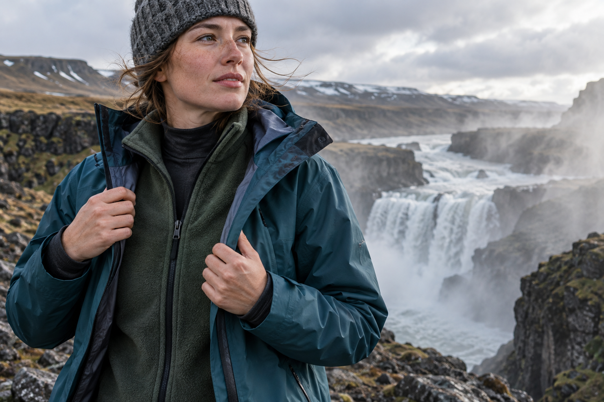
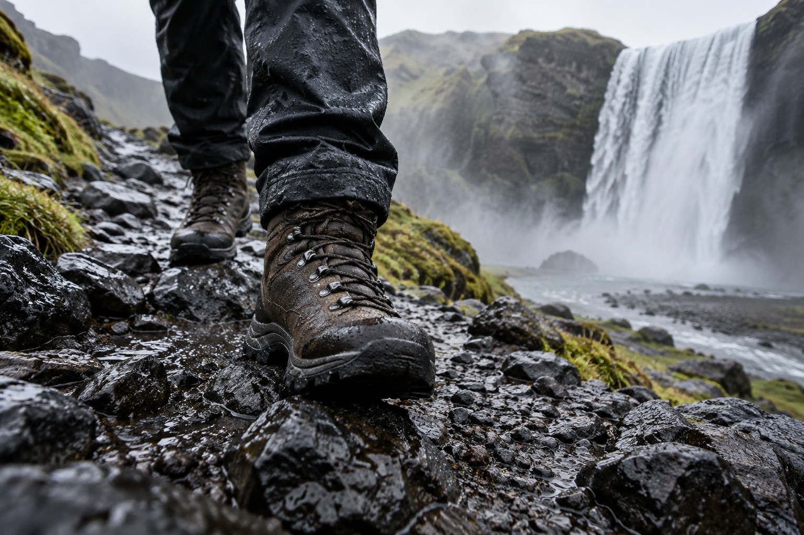

What to Pack for Iceland: First-Time Visitor Packing List
Packing for Iceland is less about bringing the heaviest clothes you own and more about building a clothing system that can handle wind, rain, cold, and rapid weather changes. Even in summer, a calm morning can turn into a wet and windy afternoon, so the right layers matter more than a single bulky jacket.
For most first-time visitors, the core packing strategy is simple: bring a moisture-managing base layer, a warm insulating layer, and a waterproof and windproof outer layer. Add reliable footwear, warm accessories, swimwear, and a small daypack that can protect your essentials from rain.
This packing list covers what most travelers need for Iceland, including clothing, footwear, rain protection, road-trip gear, electronics, geothermal pools, and seasonal adjustments. For help choosing your travel month first, use Best Time to Visit Iceland: Weather, Crowds and Costs.
Iceland Packing List at a Glance

For a typical first trip, start with these essentials:
Clothing
- ✓Waterproof shell jacket
- ✓Waterproof trousers
- ✓Fleece, wool, or insulated mid-layer
- ✓Wool or synthetic base layers
- ✓Comfortable everyday tops
- ✓Hiking or travel trousers
- ✓Warm hat
- ✓Gloves
- ✓Wool or synthetic socks
- ✓Sleepwear
- ✓Underwear
Footwear
- ✓Waterproof walking or hiking shoes
- ✓Comfortable backup shoes
- ✓Shower sandals if useful
Geothermal Bathing
- ✓Swimsuit
- ✓Quick-dry towel if your accommodation or activity does not provide one
- ✓Small waterproof bag for wet swimwear
Day Bag
- ✓Small backpack
- ✓Waterproof pack cover or dry bags
- ✓Reusable water bottle
- ✓Snacks
- ✓Sunglasses
- ✓Sunscreen
- ✓Lip balm
Electronics
- ✓Phone
- ✓Charging cable
- ✓Travel adapter
- ✓Power bank
- ✓Camera if wanted
- ✓Extra memory/storage
Road-Trip Extras
- ✓Offline maps
- ✓Car charger
- ✓Small food supply
- ✓Reusable shopping bag
- ✓Booking details saved offline
The exact list changes with season and activity level.
The Most Important Iceland Packing Rule: Use Layers

The best clothing system for Iceland is based on three layers.
Layer 1: Base Layer
This sits closest to your skin.
Its main job is to help manage moisture and keep you comfortable.
Good options include:
- ✓Merino wool
- ✓Synthetic thermal fabric
For outdoor sightseeing, hiking, and colder days, avoid relying on cotton as your main base layer.
Cotton absorbs moisture and can stay wet longer, which becomes uncomfortable when combined with:
- ✓Cold
- ✓Wind
- ✓Rain
A proper base layer matters most during:
- ✓Winter
- ✓Hiking
- ✓Long outdoor days
For a short summer city walk, you do not need to wear thermal underwear all day.
Use it when conditions and activities justify it.
Layer 2: Insulating Mid-Layer
The middle layer provides warmth.
Useful choices include:
- ✓Fleece
- ✓Wool sweater
- ✓Synthetic insulated jacket
- ✓Light down jacket
You may not need to wear it every minute.
That is the advantage of layers.
If the afternoon becomes warmer, remove it.
If wind or rain arrives, put it back on under your shell.
Fleece vs Down
Both can work.
Fleece
Advantages:
- ✓Easy to layer
- ✓Breathable
- ✓Dries relatively quickly
- ✓Useful for active sightseeing
Down or Synthetic Insulated Jacket
Advantages:
- ✓High warmth for its weight
- ✓Packs small
- ✓Useful for cold evenings and winter
The insulating jacket should normally sit under your waterproof outer shell when conditions become wet.
Layer 3: Waterproof and Windproof Outer Layer
This is arguably the most important part of your Iceland clothing system.
Your outer layer should protect you from:
- ✓Rain
- ✓Wind
- ✓Waterfall spray
A good shell jacket is usually more useful than a very heavy coat that is warm but not waterproof.
Why Wind Protection Matters So Much?
Visitors often prepare for Iceland's temperature but underestimate the wind.
The same air temperature can feel much colder when:
- ✓Wind is strong
- ✓Clothing becomes wet
- ✓You remain outdoors for a long time
That is why Iceland packing should be built around:
wind + water protection
rather than temperature alone.
Do You Need a Waterproof Jacket in Summer?
Yes.
A summer trip can still include:
- ✓Rain
- ✓Strong wind
- ✓Waterfall spray
- ✓Cool coastal conditions
Do not assume:
June, July, or August = dry weather.
A waterproof shell should remain in your daypack even when the morning looks clear.
Waterproof Jacket Vs Water-Resistant Jacket
These are not always the same.
For a short city shower, a water-resistant jacket may be enough.
For:
- ✓Long South Coast days
- ✓Waterfalls
- ✓Hiking
- ✓Sustained rain
a genuinely waterproof outer layer is much more useful.
If you are buying or borrowing gear specifically for Iceland, prioritize a proper waterproof shell.
Do You Need Waterproof Trousers?
For many travelers:
yes, they are worth bringing.
They are especially useful for:
- ✓Waterfall days
- ✓Hiking
- ✓Persistent rain
- ✓Winter
- ✓Windy exposed areas
Waterproof over-trousers can be packed into a day bag and worn over normal trousers when needed.
Who May Use Them Less?
If your trip is mainly:
- ✓Reykjavík
- ✓Restaurants
- ✓Museums
- ✓Short organized stops
you may use them less frequently.
But for a road trip with significant outdoor sightseeing, they are one of the most useful low-space items you can pack.
What Trousers Should You Wear in Iceland?
Good options include:
- ✓Hiking trousers
- ✓Technical travel trousers
- ✓Softshell trousers
These generally work better for long outdoor days than heavy jeans.
Are Jeans Bad for Iceland?
Not automatically.
Jeans are fine for:
- ✓Reykjavík
- ✓Dinner
- ✓Casual travel
But they are less practical for:
- ✓Rain
- ✓Hiking
- ✓Waterfalls
- ✓Long wet days
Once denim becomes wet, it can stay uncomfortable for a long time.
Pack jeans if you like them.
Just do not make them your only outdoor trousers.
Do You Need Thermal Underwear?
It depends on season.
Summer
Thermal base layers are useful for:
- ✓Cold mornings
- ✓Windy days
- ✓Hiking
- ✓Camping
- ✓Longer outdoor activities
You may not wear them every day.
Spring and Autumn
More useful.
Conditions can shift quickly and evenings can feel cold.
Winter
Bring them.
A proper base layer becomes part of your normal outdoor clothing system.
How Many Base Layers Should You Pack?
For a one-week trip, most travelers do not need seven separate thermal sets.
A practical approach might be:
- ✓1–2 thermal tops
- ✓1–2 thermal bottoms
depending on:
- ✓Season
- ✓Hiking
- ✓Laundry access
Wool and technical fabrics can often be used more than once before washing if cared for properly.
Fleece or Wool Sweater?
Either can work.
Fleece
Better for:
- ✓Hiking
- ✓Active days
- ✓Fast drying
Wool
Good for:
- ✓Warmth
- ✓Everyday wear
- ✓Reykjavík
- ✓Road trips
You can bring one main insulating layer rather than packing several bulky sweaters.
Do You Need a Heavy Winter Coat?
Not necessarily.
For many travelers, especially outside deep winter, a layered system works better than one extremely heavy jacket.
For winter, you may want a warmer insulated outer or mid-layer.
But it should still work with:
- ✓Wind protection
- ✓Waterproofing
A warm jacket that becomes soaked is not a good Iceland winter system.
Hat: Bring One Even in Summer
A warm hat takes almost no luggage space.
Bring one.
It can be useful when:
- ✓Wind picks up
- ✓You visit the coast
- ✓You spend time around glaciers
- ✓The evening turns cold
SafeTravel specifically warns that it can become cold even during summer.
Gloves: Not Only for Winter
Light gloves can be surprisingly useful on:
- ✓Windy summer mornings
- ✓Glacier activities
- ✓Late evenings
In winter, bring properly insulated gloves.
Better Winter Option
Consider:
- ✓Warm gloves
- ✓Waterproof outer protection if conditions require it
Cold hands can make an otherwise beautiful outdoor stop miserable very quickly.
Buff, Neck Gaiter, or Scarf
A neck gaiter is one of the easiest items to add.
It can help protect against:
- ✓Wind
- ✓Cold
and takes almost no space.
A scarf can work too, especially for city use.
For active travel, a neck gaiter is often easier.
Socks Matter More Than Most Travelers Expect
Bring comfortable socks suited to:
- ✓Walking
- ✓Footwear
- ✓Temperature
For outdoor travel, wool or synthetic socks are useful because they handle moisture better than basic cotton socks.
How Many Socks?
For a week, a practical starting point is:
- ✓4–7 pairs
depending on:
- ✓Laundry
- ✓Hiking
- ✓Weather
Bring at least one spare pair in your luggage or vehicle.
Wet feet can make a long day unpleasant.
What Shoes Should You Wear in Iceland?

For most first-time road trips, one of the best choices is:
comfortable waterproof walking or hiking footwear with good grip.
You do not necessarily need expedition boots.
You do need footwear that suits:
- ✓Wet surfaces
- ✓Gravel
- ✓Mud
- ✓Uneven paths
- ✓Waterfall areas
Do You Need Hiking Boots?
Not everyone.
Bring Hiking Boots If:
- ✓You plan proper hikes
- ✓You visit rough trails
- ✓You want ankle support
- ✓Winter or wet terrain makes them useful
Waterproof Walking Shoes May Be Enough If:
- ✓You mainly visit roadside attractions
- ✓Walk short trails
- ✓Spend time in Reykjavík
Choose based on the trip you are actually taking.
Waterproof Footwear Is Worth Prioritizing
This is one area where first-time visitors often regret choosing style over function.
Your shoes may encounter:
- ✓Rain
- ✓Puddles
- ✓Mud
- ✓Waterfall spray
- ✓Snow
A second pair of dry shoes can also be useful for:
- ✓Hotel
- ✓Reykjavík
- ✓Dinner
Do You Need Special Shoes for Reykjavík?
No.
Normal comfortable walking shoes are fine for city sightseeing in suitable conditions.
In winter, however, sidewalks can become:
- ✓Icy
- ✓Slippery
so footwear with reliable grip becomes more important.
Should You Pack Crampons?
For ordinary sightseeing, do not assume you need technical mountaineering crampons.
For guided glacier activities, operators generally provide the specialist equipment needed for that activity.
For icy winter walking, simple traction devices may sometimes be useful, but conditions and permitted equipment differ.
Choose them according to the actual trip rather than packing technical glacier equipment without knowing how to use it.
What Should You Wear to Waterfalls?
Iceland's waterfalls can be very wet even when it is not raining.
For stops such as:
- ✓Seljalandsfoss
- ✓Skógafoss
expect spray.
A useful setup is:
- ✓Waterproof shell
- ✓Waterproof trousers
- ✓Shoes with good grip
Keep electronics protected.
Do not assume you can stay completely dry simply because the forecast shows:
no rain.
What Should You Wear at Reynisfjara?
Weather on Iceland's coast can be:
- ✓Windy
- ✓Wet
- ✓Cold
Dress for exposure rather than only the temperature shown on your phone.
Wear:
- ✓Wind-resistant outer layer
- ✓Warm layer
- ✓Secure footwear
Most importantly, clothing does not make an unsafe beach condition safe.
Always follow current warning signs and remain well away from dangerous waves.
What Should You Wear Around Glaciers?
Glacier areas can feel cooler than nearby towns.
Bring:
- ✓Warm layer
- ✓Windproof/waterproof shell
- ✓Hat
- ✓Gloves when needed
For guided glacier walks, check exactly what the operator provides and what you are required to bring.
Do not buy specialist equipment before reading the activity requirements.
Pack Swimwear in Every Season
This is one item every Iceland traveler should remember.
Bring swimwear whether you visit in:
- ✓January
- ✓April
- ✓July
- ✓October
Iceland's geothermal swimming culture is year-round.
You may use swimwear for:
- ✓Reykjavík public pools
- ✓Hotel hot tubs
- ✓Geothermal lagoons
- ✓Regional swimming pools
The Icelandic Meteorological Office specifically advises visitors to bring a swimsuit regardless of season because of Iceland's many geothermally heated pools.
Do You Need a Towel?
It depends on where you plan to swim.
Many:
- ✓Hotels
- ✓Premium lagoons
provide towels or offer rentals.
Some public pools and simpler facilities may require you to:
- ✓Bring one
- ✓Rent one
Check the exact facility.
A compact quick-dry towel can be useful on a road trip without taking much luggage space.
Bring a Small Bag for Wet Swimwear
After a geothermal stop, you may need to drive for several hours.
Bring:
- ✓Waterproof pouch
- ✓Reusable wet bag
- ✓Sealed plastic-free alternative
to keep wet swimwear away from:
- ✓Dry clothes
- ✓Electronics
Small practical items like this make a road trip easier.
What Daypack Should You Bring?
For normal first-time sightseeing, you do not need a huge hiking pack.
A small backpack around:
15–25 liters
is enough for many travelers.
It can hold:
- ✓Waterproof jacket
- ✓Warm layer
- ✓Water
- ✓Snacks
- ✓Camera
- ✓Power bank
- ✓Gloves
- ✓Hat
Make the Daypack Water-Resistant
Even if the backpack itself is not fully waterproof, protect important items.
Options include:
- ✓Rain cover
- ✓Dry bag
- ✓Waterproof pouch
SafeTravel recommends keeping extra clothing protected from water.
That is particularly useful on longer outdoor days.
What Should Stay in Your Daypack?
A useful daily setup is:
- ✓Waterproof shell
- ✓Warm layer
- ✓Hat
- ✓Gloves
- ✓Water
- ✓Snack
- ✓Phone
- ✓Power bank
- ✓Sunglasses
- ✓Sunscreen
- ✓Lip balm
- ✓Any medication
You do not need to carry your entire suitcase.
The goal is to handle changing conditions without constantly returning to the car.
Bring a Reusable Water Bottle
Icelandic cold tap water is generally excellent.
A reusable bottle is usually more useful than buying bottled water repeatedly.
It also reduces:
- ✓Cost
- ✓Waste
Refill at:
- ✓Accommodation
- ✓Cafes when permitted
- ✓Normal potable taps
Do not assume untreated water from every stream is automatically safe simply because Iceland has a reputation for clean water.
Use normal drinking-water judgment.
Do You Need Sunscreen in Iceland?
Yes.
Especially during:
- ✓Summer
- ✓Long outdoor days
- ✓Hiking
Cool air can make travelers forget about sun exposure.
Long daylight means you may spend many hours outside.
Bring:
- ✓Sunscreen
- ✓Sunglasses
even if Iceland does not feel like a traditional sunny destination.
Sunglasses Are Useful Year-Round
They can help with:
- ✓Bright summer light
- ✓Glare
- ✓Snow
- ✓Long driving days
If you visit in winter, snow glare can be significant.
Lip Balm and Moisturizer
Wind and cold can dry:
- ✓Lips
- ✓Skin
These are small items but useful on both:
- ✓Summer
- ✓Winter
trips.
Summer Packing: Do Not Pack Only Light Clothes
A common mistake is seeing:
July
and packing as if you are visiting continental Europe in summer.
You still need:
- ✓Waterproof shell
- ✓Warm layer
- ✓Long trousers
- ✓Closed shoes
- ✓Hat
- ✓Light gloves
You can add lighter shirts.
Do not remove the weather-protection layers.
One Useful Summer Extra: Sleep Mask
In early summer, Iceland can remain very bright late at night.
If you are sensitive to light while sleeping, bring:
an eye mask.
It is tiny, cheap, and can make a large difference during:
- ✓May
- ✓June
- ✓July
especially in accommodation with thin curtains.
Summer Packing Starter List
For roughly one week, a first-time traveler might bring:
- ✓1 waterproof shell
- ✓1 pair waterproof over-trousers
- ✓1 fleece or warm mid-layer
- ✓1 light insulated jacket if needed
- ✓1–2 base-layer tops
- ✓1 base-layer bottom
- ✓2–3 travel/hiking trousers
- ✓4–6 everyday tops
- ✓5–7 pairs underwear
- ✓4–7 pairs socks
- ✓Warm hat
- ✓Light gloves
- ✓Waterproof walking shoes
- ✓Second casual shoes
- ✓Swimsuit
- ✓Sleepwear
You do not need to follow the numbers exactly.
Adjust for:
- ✓Laundry
- ✓Trip length
- ✓Activities
Do Not Overpack Iceland
You need good layers.
You do not need:
- ✓Five heavy sweaters
- ✓Three winter coats
- ✓Multiple pairs of hiking boots
Good Iceland packing is about:
versatility.
One quality waterproof shell can be used repeatedly.
One warm mid-layer can work across several days.
Choose Clothing That Mixes Easily
Road trips involve frequent hotel changes.
Simple clothing combinations help.
Choose items that can be:
- ✓Layered
- ✓Reworn
- ✓Washed easily
This is more useful than packing a completely different outfit for every day.
Leave Some Luggage Space
You may want to buy:
- ✓Wool products
- ✓Local food
- ✓Small souvenirs
Packing your suitcase completely full before departure leaves no room later.
More importantly, carrying less luggage makes:
- ✓Hotel changes
- ✓Rental-car packing
easier.
Clothing Is Safety Equipment in Iceland
This is the main point to remember.
A waterproof jacket is not simply a fashion choice.
Warm layers and dry footwear can affect whether an outdoor day remains:
- ✓Comfortable
- ✓Safe
SafeTravel specifically warns that the combination of:
cold + wind + rain
is often underestimated and that hypothermia is possible even in summer.
So start your Iceland packing with weather protection.
Then add the rest.
What to Pack for Iceland in Winter
Winter packing needs more insulation, but the same three-layer principle still applies.
Start with:
base layer → insulation → waterproof/windproof shell
Then strengthen each layer for colder conditions.
A winter packing list should normally include:
- ✓Thermal base-layer tops
- ✓Thermal base-layer bottoms
- ✓Warm fleece or wool mid-layer
- ✓Insulated jacket
- ✓Waterproof and windproof outer shell
- ✓Waterproof trousers
- ✓Warm hat
- ✓Insulated gloves
- ✓Neck gaiter or scarf
- ✓Warm wool or synthetic socks
- ✓Waterproof boots with reliable grip
Do not rely on one fashionable winter coat if it performs poorly in:
- ✓Rain
- ✓Wet snow
- ✓Strong wind
The best system keeps both:
warmth and weather protection
working together.
Winter Base Layers
For winter, thermal base layers become much more important than they are on a normal summer city day.
Pack at least:
- ✓2 thermal tops
- ✓1–2 thermal bottoms
for a one-week trip, depending on access to laundry.
Merino wool and synthetic fabrics both work well.
Why Two Sets Help
If one becomes:
- ✓Wet
- ✓Sweaty
- ✓Dirty
you still have a dry option.
Dry clothing matters more in winter than having a different outfit every day.
Winter Mid-Layers
One warm fleece plus an insulated layer gives you more flexibility than several bulky sweaters.
For example:
Mild Winter Day
Base layer + fleece + shell
Colder Day
Base layer + fleece + insulated jacket + shell
That allows you to adjust rather than overheating whenever you enter:
- ✓Car
- ✓Cafe
- ✓Hotel
Winter Gloves
Light summer gloves are not enough for deep winter.
Bring insulated gloves that protect against:
- ✓Cold
- ✓Wind
A waterproof outer surface is useful when conditions are:
- ✓Snowy
- ✓Wet
If you use your phone frequently, touchscreen-compatible gloves can be convenient.
But do not choose phone convenience over warmth.
Winter Footwear
Your winter footwear should provide:
- ✓Warmth
- ✓Waterproofing
- ✓Grip
A proper waterproof boot is much more useful than a normal fashion sneaker.
Snow, slush, ice, and wet ground can all occur.
Bring Spare Socks
Keep at least one dry pair:
- ✓In your luggage
- ✓Or in the car/daypack on longer outings
Cold wet feet can quickly end an outdoor day.
Do You Need Ice Grips in Winter?
Simple removable traction aids can be useful when sidewalks or paths become icy.
But they are not a substitute for:
- ✓Proper footwear
- ✓Safe judgment
Do not use ordinary street traction devices as a replacement for specialist glacier equipment.
Guided glacier tours provide or specify the equipment needed for that activity.
Winter Sunglasses Still Matter
Snow and low-angle sunlight can create strong glare.
Bring sunglasses even in:
- ✓December
- ✓January
- ✓February
They can be useful while:
- ✓Driving
- ✓Walking in snow
Hand Warmers: Useful but Optional
Disposable or rechargeable hand warmers can be useful for:
- ✓Northern Lights watching
- ✓Photography
- ✓Long outdoor waits
They are not essential if you already have proper gloves.
Treat them as:
extra comfort
rather than your main cold-weather strategy.
What to Pack for Iceland in Spring
Spring in Iceland can still feel wintry.
Do not pack for:
European spring
based only on the calendar.
You may encounter:
- ✓Cold rain
- ✓Wind
- ✓Snow
- ✓Wet roads
- ✓Longer sunny periods
That means spring packing should stay close to the winter/summer transition system.
Spring Essentials
Bring:
- ✓Waterproof shell
- ✓Waterproof trousers
- ✓Warm fleece
- ✓Light insulated jacket
- ✓Base layer
- ✓Hat
- ✓Gloves
- ✓Waterproof footwear
You may use the warm layers less frequently than in January.
Still bring them.
April vs May Packing
April generally requires:
more winter flexibility.
May usually gives you:
- ✓Longer daylight
- ✓Milder conditions
but that does not make rain and wind disappear.
For May, you can reduce some of the heavy insulation.
Do not remove:
- ✓Waterproofing
- ✓Warm hat
- ✓Wind protection
What to Pack for Iceland in Autumn
Autumn can change quickly.
September may still feel relatively mild on some days.
October can become much more winter-like.
Bring a system that can handle both.
Autumn Packing Essentials
- ✓Waterproof shell
- ✓Waterproof trousers
- ✓Warm mid-layer
- ✓Base layer
- ✓Light insulated jacket
- ✓Hat
- ✓Gloves
- ✓Waterproof footwear
By late autumn, use a more winter-oriented setup.
September Packing
September can combine:
- ✓Cool daytime weather
- ✓Rain
- ✓Wind
- ✓Cold evenings
Pack similarly to summer but add stronger insulation.
If Northern Lights viewing is part of the trip, bring extra warmth for standing outside at night.
October Packing
October deserves more winter preparation.
Bring:
- ✓Proper thermal base layer
- ✓Warm gloves
- ✓Insulated layer
- ✓Weatherproof footwear
Do not assume autumn colors mean mild conditions.
Month-by-Month Clothing Shortcut
| Month | Packing Style |
|---|---|
| January | Full winter |
| February | Full winter |
| March | Winter with increasing daylight |
| April | Winter/spring transition |
| May | Cool spring with strong rain/wind protection |
| June | Summer layers |
| July | Summer layers |
| August | Summer layers + warmer evenings |
| September | Summer/autumn transition |
| October | Autumn/winter transition |
| November | Full winter |
| December | Full winter |
This is a starting point.
Actual conditions should always be checked shortly before travel.
What to Pack for a Self-Drive Iceland Trip
A road trip changes the packing list because your car becomes a moving base.
Useful road-trip items include:
- ✓Phone mount
- ✓Car charging cable
- ✓Power bank
- ✓Offline maps
- ✓Water bottle
- ✓Snacks
- ✓Reusable grocery bag
- ✓Small rubbish bag
- ✓Wet-clothing bag
- ✓Sunglasses
- ✓Spare socks
- ✓Extra warm layer
Keep the items you may need during the day:
accessible.
Do not bury your waterproof trousers under two suitcases.
Keep One Weather Bag in the Car
A useful strategy is to keep a small bag containing:
- ✓Waterproof trousers
- ✓Gloves
- ✓Hat
- ✓Spare socks
- ✓Extra fleece
This is particularly useful when the weather changes unexpectedly.
You can adapt without opening the entire suitcase.
Do Not Leave Electronics Loose in the Car
Secure:
- ✓Phone
- ✓Camera
- ✓Battery packs
especially when driving on:
- ✓Gravel
- ✓Rougher roads
A sudden stop can turn loose gear into damaged equipment.
Car Charger
Bring a compatible charging setup for your rental vehicle.
Your phone may be used throughout the day for:
- ✓Navigation
- ✓Weather
- ✓Road conditions
- ✓Hotel communication
A phone reaching 5% battery in a remote area is avoidable.
Power Bank
Even with car charging, bring one.
It becomes useful when:
- ✓Hiking
- ✓Waiting for Northern Lights
- ✓Using the phone for photography
- ✓Spending long periods outside the vehicle
A medium-capacity power bank is enough for most travelers.
Electronics and Plug Adapter for Iceland
Iceland uses European-style power outlets.
Travelers from countries using different plugs should bring an appropriate travel adapter.
A compact universal adapter works well if you travel internationally often.
Voltage
Before plugging in equipment such as:
- ✓Hair dryer
- ✓Styling tools
- ✓Specialized chargers
check whether the device supports Iceland's electrical system.
Most modern:
- ✓Phones
- ✓Laptops
- ✓Camera chargers
support a wide voltage range.
Always check the label on the actual device.
Bring More Than One Charging Cable
For a road trip, one damaged cable can become surprisingly inconvenient.
A useful setup is:
- ✓Main phone cable
- ✓Spare cable
- ✓Car charging option
If you use:
- ✓Camera
- ✓Watch
- ✓Tablet
make sure each has the correct cable.
Multi-Port Charger
Couples or families can reduce clutter by bringing one charger that handles several devices.
This is especially useful in:
- ✓Guesthouses
- ✓Older rooms
where available outlets may be limited.
Should You Bring a Laptop?
Only if you actually need it.
For a normal holiday, a laptop adds:
- ✓Weight
- ✓Charger
- ✓Security concern
Most trip needs can be handled by a phone.
Bring a laptop if:
- ✓You work remotely
- ✓Edit photos
- ✓Need specialized software
Otherwise, leave it at home.
Camera Gear for Iceland
Iceland is extremely photogenic, but more equipment is not always better.
For most travelers, choose between:
- ✓Phone camera
- ✓Compact camera
- ✓Mirrorless/DSLR setup
based on your real interest in photography.
Useful Camera Items
Consider:
- ✓Spare battery
- ✓Extra memory card
- ✓Lens cloth
- ✓Rain cover
- ✓Small protective case
Cold weather can reduce battery performance.
Keep spare batteries:
- ✓Charged
- ✓Warm when possible
Protect Cameras Near Waterfalls
Waterfall spray can be stronger than expected.
Use:
- ✓Rain cover
- ✓Waterproof pouch
- ✓Lens cloth
Do not assume:
“It is not raining”
means the camera will stay dry.
Tripod: Bring One Only if You Will Use It
A tripod can be useful for:
- ✓Northern Lights
- ✓Long exposures
- ✓Landscape photography
But it adds:
- ✓Weight
- ✓Setup time
If photography is casual, your phone or camera stabilization may be enough.
Do not carry a heavy tripod around Iceland simply because a packing list told you to.
What Camera Gear Helps With Northern Lights?
At a basic level, photographers commonly use:
- ✓Camera capable of manual settings
- ✓Wide-angle lens
- ✓Tripod
- ✓Spare batteries
Phone cameras have improved significantly and can capture aurora under suitable conditions.
But photographing Northern Lights should not become the reason you spend the entire night looking at a screen.
Keep Batteries Warm in Winter
Cold can reduce battery life.
Store spare camera batteries:
- ✓Inside an inner pocket
rather than leaving all of them exposed in a cold backpack.
The same applies to your phone when standing outside for long periods.
Northern Lights Clothing
Aurora watching is different from normal sightseeing.
You may spend:
30–90 minutes or longer
standing still.
Standing still feels much colder than walking.
Pack more warmth than you think you need.
Aurora Clothing Setup
Consider:
- ✓Thermal base layer
- ✓Fleece
- ✓Insulated jacket
- ✓Waterproof/windproof outer shell
- ✓Warm trousers
- ✓Hat
- ✓Neck gaiter
- ✓Insulated gloves
- ✓Warm socks
- ✓Waterproof boots
The main goal is:
stay warm enough to wait patiently.
Bring Something Warm to Sit or Stand On?
Not essential, but useful for photographers.
A small waterproof sitting pad can help during long outdoor waits.
Do not bring bulky camping furniture unless it fits your travel style.
Hot Drink Flask
A small insulated flask can be useful for:
- ✓Aurora nights
- ✓Winter road trips
This is optional.
It should not become unnecessary luggage if you rarely use one.
What to Pack for Hiking in Iceland
Hiking gear depends entirely on:
- ✓Trail
- ✓Season
- ✓Duration
- ✓Terrain
Do not use one generic packing list for every hike.
For ordinary day hiking, start with:
- ✓Waterproof footwear
- ✓Waterproof jacket
- ✓Waterproof trousers
- ✓Layered clothing
- ✓Small backpack
- ✓Water
- ✓Food
- ✓Phone
- ✓Power bank
- ✓Hat
- ✓Gloves
- ✓Basic first-aid items
Longer or Remote Hikes Need More Planning
Depending on the trail, you may also need:
- ✓Navigation tools
- ✓Additional food
- ✓Extra clothing
- ✓Emergency equipment
Check current:
- ✓Trail conditions
- ✓Weather
- ✓Safety guidance
before departure.
Do not pack for a serious remote hike using only a general tourism article.
Hiking Poles
Optional for normal sightseeing.
They may help on:
- ✓Uneven ground
- ✓Steep trails
- ✓Long hikes
If you rarely use poles, do not bring them only because Iceland has mountains.
Use them when they suit:
- ✓Your mobility
- ✓Trail
Glacier Hiking Gear
Do not pack:
- ✓Technical crampons
- ✓Ice axe
- ✓Helmet
for a standard guided glacier experience unless the operator specifically tells you to.
Reputable glacier operators typically provide or specify:
- ✓Safety equipment
- ✓Technical equipment
Your responsibility is normally to arrive with suitable:
- ✓Clothing
- ✓Footwear
Check the exact tour requirements before departure.
What to Pack for a Geothermal Pool
Create a small pool kit.
Include:
- ✓Swimsuit
- ✓Towel if needed
- ✓Flip-flops or shower sandals if you prefer them
- ✓Waterproof wet bag
- ✓Hair tie
- ✓Small toiletries
You do not need a large spa bag.
Public Pool Shower Etiquette
Icelandic swimming pools require visitors to wash properly before entering the pool.
Pack toiletries if:
- ✓You prefer your own products
- ✓The facility does not provide what you want
Follow the instructions at the facility.
Hair and Geothermal Water
Some geothermal bathing water can affect hair texture.
If you have:
- ✓Long
- ✓Dry
- ✓Colored
hair, check the facility's current advice.
Some spas provide conditioner.
You may want to bring your own if hair care is important to you.
Toiletries: Pack What You Actually Use
You can buy basic toiletries in Iceland.
You do not need to carry:
- ✓Full-size backups of everything
unless your products are specialized.
A normal travel toiletry bag should include:
- ✓Toothbrush
- ✓Toothpaste
- ✓Deodorant
- ✓Skin care
- ✓Personal hygiene items
- ✓Any specialized products
Moisturizer
Wind and cold can dry the skin.
A small moisturizer can be useful throughout the year.
Lip Balm
Bring one.
It takes almost no space and is especially useful during:
- ✓Cold
- ✓Wind
Prescription Medication
Bring enough for the full trip, ideally with a small extra supply if appropriate.
Keep essential medication:
- ✓In your carry-on
rather than placing all of it in checked luggage.
Medication Documentation
If you carry prescription or controlled medication, check the current rules before travel.
Bring:
- ✓Original packaging
- ✓Prescription documentation
when required.
Do not assume all medicines legal at home can be carried internationally without restrictions.
Basic First-Aid Kit
A small personal kit can include:
- ✓Plasters/bandages
- ✓Blister treatment
- ✓Pain relief you normally use
- ✓Personal medications
- ✓Antiseptic wipes
You do not need a full expedition medical kit for a normal Golden Circle road trip.
Motion Sickness Medication
Useful if you are sensitive and plan:
- ✓Whale watching
- ✓Boat trips
Bring a product you already know works for you, if medically appropriate.
Family Packing for Iceland
Families should prioritize:
- ✓Spare dry clothes
- ✓Easy-access snacks
- ✓Extra socks
- ✓Waterproof layers
- ✓Warm hats
- ✓Gloves
Children may:
- ✓Get wet more easily
- ✓Become cold faster
- ✓Need clothing changes after outdoor stops
Keep one complete spare child outfit accessible during the day.
Children's Waterproof Clothing
This is one area where proper gear can make a major difference.
A child sitting in wet trousers for several hours in a car can quickly become:
- ✓Cold
- ✓Uncomfortable
Waterproof outerwear helps prevent that.
Children's Footwear
Choose shoes or boots with:
- ✓Good grip
- ✓Waterproofing
Bring:
- ✓Spare socks
and consider backup shoes for longer trips.
Snacks for Children
Keep easy food in the car.
Rural restaurant timing may not match a child's hunger schedule.
Road-trip snacks can reduce:
- ✓Stress
- ✓Unplanned expensive stops
Car Seats
Do not automatically bring a large child seat from home without first comparing:
- ✓Airline baggage rules
- ✓Rental-company child-seat rental
- ✓Your child's requirements
Reserve appropriate seats in advance when renting locally.
Packing for Older Travelers
Prioritize:
- ✓Warmth
- ✓Good footwear
- ✓Dry clothing
- ✓Lightweight layers
A heavy suitcase full of bulky items may be harder to manage across:
- ✓Multiple guesthouses
- ✓Rental cars
Choose a smaller number of versatile layers.
Travelers With Limited Mobility
Useful items may include:
- ✓Walking aid you already use
- ✓Weatherproof cover
- ✓Small folding seat where practical
- ✓Easy-grip gloves
- ✓Shoes with reliable traction
Do not test unfamiliar mobility equipment for the first time on the trip.
What Can You Rent in Iceland Instead of Bringing?
Depending on the activity and provider, you may be able to rent:
- ✓Hiking boots
- ✓Waterproof clothing
- ✓Camping equipment
- ✓Technical glacier gear
- ✓Child equipment
- ✓Outdoor equipment
Availability varies.
Renting Makes Sense If:
- ✓The item is bulky
- ✓You need it once
- ✓Airline baggage fees are high
Bringing Your Own Makes Sense If:
- ✓Fit matters
- ✓You will use it daily
- ✓You already own reliable equipment
Footwear is one item where familiar fit can be more valuable than saving luggage space.
Do Not Buy Technical Gear You Will Never Use Again
For a standard first Iceland trip, you probably do not need to purchase:
- ✓Mountaineering boots
- ✓Expedition jacket
- ✓Professional ice gear
Use appropriate normal outdoor clothing and rent specialist equipment when the activity requires it.
What to Keep in Your Carry-On
Never check everything important.
Keep these with you:
- ✓Passport
- ✓Medication
- ✓Phone
- ✓Charger
- ✓Wallet/cards
- ✓One warm layer
- ✓Essential booking details
- ✓One change of underwear/socks
For winter travel, consider adding:
- ✓Hat
- ✓Gloves
If checked luggage is delayed, you can still manage the first night.
Put One Basic Outfit in Your Carry-On
A useful insurance policy is:
- ✓Underwear
- ✓Socks
- ✓Top
This takes little space and helps if baggage is delayed.
What Should Go in Checked Luggage?
Good checked-luggage items include:
- ✓Larger toiletries
- ✓Spare clothing
- ✓Hiking poles if airline rules require
- ✓Non-essential equipment
Always follow airline rules for:
- ✓Batteries
- ✓Electronics
- ✓Liquids
Lithium Batteries Usually Belong in Carry-On
Airlines commonly restrict spare lithium batteries from checked baggage.
That includes many:
- ✓Power banks
- ✓Camera batteries
Check your airline's current rules before packing.
Do not assume all battery sizes are treated the same.
Road-Trip Documents to Save Offline
Keep digital or printed copies of:
- ✓Rental-car booking
- ✓Hotel addresses
- ✓Activity confirmations
- ✓Insurance details
Your phone may have signal most of the time.
Still prepare for:
- ✓No connection
- ✓Dead battery
Pack Less, Organize Better
Use:
- ✓Packing cubes
- ✓Small waterproof bags
if they help you keep:
- ✓Dry gear
- ✓Wet gear
- ✓Electronics
separate.
Organization matters more on a road trip because you may change accommodation frequently.
A Good Rule for Iceland Luggage
Every major clothing item should solve at least one real problem:
- ✓Wind
- ✓Rain
- ✓Cold
- ✓Walking
If an item is:
- ✓Heavy
- ✓Difficult to layer
- ✓Rarely useful
consider leaving it behind.
The goal is not to prepare for every imaginable situation.
It is to prepare well for the conditions you are realistically likely to encounter.
Complete Summer Iceland Packing List
For a normal summer road trip, focus on weather protection rather than bulky winter clothing.
Jackets and Layers
- ✓1 waterproof and windproof shell jacket
- ✓1 fleece or wool mid-layer
- ✓1 light insulated jacket if you get cold easily
- ✓1–2 wool or synthetic base-layer tops
- ✓1 optional thermal bottom for colder days
Trousers
- ✓2–3 hiking or travel trousers
- ✓1 waterproof over-trouser
- ✓1 casual trouser or jeans for Reykjavík if wanted
Tops
- ✓3–6 everyday shirts
- ✓1–2 long-sleeve tops
Underwear and Socks
- ✓Underwear for several days
- ✓4–7 pairs of socks
- ✓At least 2 pairs of wool or synthetic outdoor socks
Warm Accessories
- ✓Warm hat
- ✓Light gloves
- ✓Neck gaiter or scarf
Footwear
- ✓Waterproof walking or hiking shoes
- ✓Comfortable backup shoes
Swimming
- ✓Swimsuit
- ✓Wet bag
- ✓Quick-dry towel if needed
Other Summer Items
- ✓Sunglasses
- ✓Sunscreen
- ✓Reusable water bottle
- ✓Small backpack
- ✓Waterproof bag or backpack cover
- ✓Sleep mask
The sleep mask is particularly useful during the brightest part of summer.
Complete Winter Iceland Packing List
Winter requires stronger insulation but still relies on layering.
Base Layers
- ✓2 thermal tops
- ✓1–2 thermal bottoms
- ✓Wool or synthetic fabrics
Mid-Layers
- ✓Warm fleece
- ✓Wool sweater or another insulating layer
Outer Layers
- ✓Insulated jacket
- ✓Waterproof and windproof shell
- ✓Waterproof trousers
Trousers
- ✓Warm hiking or travel trousers
- ✓Thermal layer underneath as needed
Warm Accessories
- ✓Insulated gloves
- ✓Warm hat
- ✓Neck gaiter or scarf
Footwear
- ✓Waterproof insulated boots
- ✓Warm wool or synthetic socks
- ✓Optional removable walking traction aids for icy urban paths where appropriate
Other Winter Items
- ✓Sunglasses
- ✓Lip balm
- ✓Moisturizer
- ✓Power bank
- ✓Swimsuit
- ✓Small daypack
- ✓Dry bag
- ✓Optional hand warmers
For Northern Lights nights, bring enough clothing to remain comfortable while standing still rather than only enough for walking.
Spring Packing Checklist
Spring requires a mixed system.
Pack:
- ✓Waterproof shell
- ✓Waterproof trousers
- ✓Warm mid-layer
- ✓Light insulated jacket
- ✓1–2 base layers
- ✓Waterproof shoes
- ✓Warm hat
- ✓Gloves
- ✓Neck gaiter
- ✓Swimsuit
- ✓Sunglasses
- ✓Small daypack
April deserves more winter-style preparation than late May.
Do not remove the warm layers simply because your calendar says spring.
Autumn Packing Checklist
For September and October, bring:
- ✓Waterproof jacket
- ✓Waterproof trousers
- ✓Fleece or wool layer
- ✓Insulated jacket
- ✓Thermal base layer
- ✓Warm hat
- ✓Gloves
- ✓Waterproof footwear
- ✓Warm socks
- ✓Swimsuit
- ✓Daypack
- ✓Power bank
September may still provide relatively mild daytime conditions.
October can feel much closer to winter.
Pack enough flexibility for both.
The Core Iceland Packing List That Works Year-Round
Regardless of month, most first-time visitors should bring:
- ✓Waterproof shell
- ✓Warm mid-layer
- ✓Comfortable waterproof footwear
- ✓Warm hat
- ✓Gloves
- ✓Wool or synthetic socks
- ✓Swimsuit
- ✓Small backpack
- ✓Reusable water bottle
- ✓Phone
- ✓Charger
- ✓Power bank
- ✓Travel adapter if required
Season changes how warm each item needs to be.
It does not remove the need for basic weather protection.
How Much Clothing Do You Need for 3 Days in Iceland?
For a short trip, avoid carrying a full-size wardrobe.
A practical starting point is:
Tops
- ✓2–3 everyday tops
- ✓1 base layer
Bottoms
- ✓1–2 trousers
- ✓Waterproof over-trousers
Warm Layers
- ✓1 fleece
- ✓1 shell
- ✓Insulated layer depending on season
Socks and Underwear
- ✓3–4 pairs each
Footwear
- ✓1 main waterproof shoe
- ✓Optional lightweight backup
Other
- ✓Hat
- ✓Gloves
- ✓Swimsuit
- ✓Daypack
For winter, increase thermal clothing rather than adding more ordinary outfits.
What to Pack for 5 Days
A five-day trip normally needs only a small increase.
Consider:
- ✓3–4 everyday tops
- ✓2 trousers
- ✓1–2 base-layer tops
- ✓1 thermal bottom depending on season
- ✓5 pairs underwear
- ✓4–5 pairs socks
- ✓1 fleece
- ✓1 insulated layer
- ✓1 shell
- ✓Waterproof trousers
- ✓Waterproof footwear
- ✓Backup shoes
- ✓Swimsuit
You still do not need:
five completely different outdoor outfits.
Layers can be reused.
What to Pack for 7 Days
One week is where travelers often begin overpacking.
A practical seven-day setup might include:
- ✓4–6 everyday tops
- ✓2–3 trousers
- ✓1–2 thermal tops
- ✓1–2 thermal bottoms depending on season
- ✓5–7 underwear
- ✓5–7 pairs socks
- ✓1 fleece
- ✓1 insulated jacket
- ✓1 waterproof shell
- ✓1 waterproof trouser
- ✓1 main waterproof shoe
- ✓1 backup shoe
- ✓Warm accessories
- ✓Swimsuit
If laundry is available, you can reduce these numbers.
What to Pack for 10 Days
Do not pack ten full outfits.
For a 10-day road trip, use:
one-week packing + laundry.
A reasonable setup is:
- ✓5–7 tops
- ✓2–3 outdoor trousers
- ✓2 base-layer tops
- ✓1–2 thermal bottoms
- ✓6–8 underwear
- ✓6–8 pairs socks
- ✓1 waterproof shell
- ✓1 waterproof trouser
- ✓1 fleece
- ✓1 insulated jacket
- ✓Waterproof footwear
- ✓Backup shoes
- ✓Hat
- ✓Gloves
- ✓Swimsuit
Plan one laundry stop around:
Day 5–7.
This keeps the suitcase smaller and makes frequent hotel changes easier.
Should You Pack One Outfit Per Day?
No.
This is one of the easiest ways to overpack Iceland.
Your main technical items are designed to be reused.
For example:
Shell Jacket
Can be worn every day.
Fleece
Can be reworn.
Hiking Trousers
Can normally be used across several days unless they become dirty or wet.
Base Layers
Can be rotated.
Save luggage space for clothing that actually changes comfort.
Laundry Strategy for Iceland
Laundry can significantly reduce how much you carry on longer trips.
Check whether your accommodation offers:
- ✓Washing machine
- ✓Paid laundry
- ✓Guest laundry room
Apartments and hostels may be particularly useful.
When Should You Do Laundry?
For a 10-day trip:
around the middle of the trip
works well.
For two weeks:
plan one or two laundry opportunities.
Do not wait until:
every sock you own is dirty.
Bring a Small Laundry Bag
Keep:
- ✓Dirty clothing
- ✓Clean clothing
separate.
A lightweight fabric bag works well.
Avoid using your wet-swimwear bag as the permanent laundry bag because damp clothing needs airflow.
Dry Wet Clothes Before Packing Them
Do not put a soaked:
- ✓Jacket
- ✓Sock
- ✓Swimsuit
into your suitcase for several days.
Dry items whenever possible before moving to the next accommodation.
This reduces:
- ✓Smell
- ✓Moisture
- ✓Discomfort
Rain Packing Strategy
Do not react to an Iceland rain forecast by packing three umbrellas.
Build a system.
Upper Body
Waterproof shell.
Lower Body
Waterproof over-trousers.
Feet
Waterproof footwear.
Backpack
Rain cover or dry bags.
This protects the important parts of your day much better.
Should You Bring an Umbrella?
You can.
But I would not make it a priority item.
Wind can make umbrellas:
- ✓Difficult to use
- ✓Easy to damage
A hooded waterproof jacket is normally more practical for outdoor sightseeing.
An umbrella can still be useful in:
- ✓Reykjavík
- ✓Light rain
- ✓Calm weather
if you prefer one.
Pack for Wind, Not Just Rain
Strong wind affects what you should wear and carry.
Useful items include:
- ✓Secure hood
- ✓Close-fitting hat
- ✓Neck gaiter
- ✓Windproof shell
Avoid depending on:
- ✓Loose umbrellas
- ✓Large unsecured hats
Keep lightweight items secure at exposed viewpoints.
What Should You Wear on a Typical Summer Road-Trip Day?
A practical starting outfit is:
Base
T-shirt or light long-sleeve top.
Mid-Layer
Fleece stored in the car or backpack.
Outer Layer
Waterproof shell ready to use.
Bottom
Hiking/travel trousers.
Shoes
Waterproof walking shoes.
Bag
Hat and light gloves inside.
If conditions change, add or remove layers.
Typical Winter Road-Trip Outfit
A winter outdoor setup may look like:
Base
Thermal top and bottom.
Mid
Fleece.
Insulation
Insulated jacket.
Outer
Weatherproof shell.
Bottom
Warm trousers + waterproof protection as needed.
Accessories
Warm hat, gloves and neck protection.
Feet
Warm socks + waterproof boots.
Adjust according to the day's actual conditions.
Carry-On vs Checked Luggage
Your carry-on should contain the items you cannot easily replace during the first day.
Keep in Your Carry-On
- ✓Passport
- ✓Wallet/cards
- ✓Medication
- ✓Phone
- ✓Phone charger
- ✓Power bank according to airline rules
- ✓Travel documents
- ✓Warm layer
- ✓Underwear
- ✓Socks
- ✓Essential toiletries within airline liquid rules
For winter:
- ✓Hat
- ✓Gloves
are also useful in your carry-on.
Why Keep Warm Clothing in the Carry-On?
Imagine your checked bag is delayed.
If all your:
- ✓Jacket
- ✓Warm clothing
- ✓Socks
are inside it, the first Iceland day becomes much harder.
At minimum, be able to handle:
one day of Iceland weather
using only your carry-on.
What Can Go in Checked Luggage?
Depending on airline rules:
- ✓Most spare clothing
- ✓Larger toiletries
- ✓Hiking poles
- ✓Non-essential equipment
- ✓Backup footwear
Always check your airline's current baggage restrictions.
Power Banks and Spare Batteries
Airline rules commonly require spare lithium batteries and power banks to travel in the cabin rather than checked baggage.
Battery-size restrictions can also apply.
Check your airline's current rules before departure.
Do not assume every power bank is permitted simply because it fits inside your bag.
Keep Medication Accessible
Essential prescription medication should normally remain with you.
Do not place your entire supply in checked luggage.
If your medication has:
- ✓Storage requirements
- ✓Import restrictions
confirm the rules before departure.
What Not to Pack for Iceland
Knowing what to leave at home can be as useful as the packing list.
Too Many Cotton Outdoor Clothes
Cotton is not the best primary layer for wet, cold outdoor conditions.
Keep cotton for:
- ✓Hotel
- ✓City
- ✓Casual use
rather than depending on it for exposed hiking.
Several Heavy Sweaters
One or two effective insulating layers are enough for many trips.
Several Heavy Jackets
Use a layer system.
You normally do not need:
- ✓Rain jacket
- ✓Ski jacket
- ✓Heavy city coat
- ✓Second ski jacket
all on one normal trip.
Too Many Shoes
For many visitors:
- ✓Waterproof walking shoe
- ✓Lightweight backup shoe
is enough.
Fashion-Only Footwear for Outdoor Days
Choose grip and weather protection.
Large Hard-Shell Suitcases for Frequent Hotel Changes
Possible, but inconvenient.
Smaller luggage is easier for a road trip.
Technical Mountaineering Equipment
Do not buy or carry specialist equipment unless your activity specifically requires personal gear.
Guided providers often supply technical safety equipment.
A Huge First-Aid Kit
Normal travelers only need a small personal kit.
Excessive Bottled Water
Bring a reusable bottle.
Too Many Paid-Activity-Specific Outfits
Use versatile outdoor layers instead.
Do You Need Formal Clothes in Iceland?
Usually not.
Iceland travel is relatively casual.
For a nice Reykjavík restaurant, smart casual clothing is enough in many situations.
You do not normally need:
- ✓Formal suit
- ✓Evening gown
unless your specific event requires it.
One clean casual outfit is enough for most travelers.
What Should Women Pack for Iceland?
The core weather system is the same for everyone:
- ✓Waterproof outer layer
- ✓Warm insulation
- ✓Base layers
- ✓Appropriate footwear
Additional personal items may include:
- ✓Hair ties for wind
- ✓Preferred personal-care products
- ✓Swimwear
- ✓Skin moisturizer
You do not need a separate “women's Iceland wardrobe.”
Pack according to weather and activity.
What Should Men Pack?
The same principle applies.
Focus on:
- ✓Layers
- ✓Waterproofing
- ✓Warm socks
- ✓Practical footwear
rather than packing only:
- ✓Jeans
- ✓Hoodie
- ✓Sneakers
for an outdoor road trip.
Packing for Children
Children need the same weather system but usually require more backup clothing.
Pack:
- ✓Waterproof jacket
- ✓Waterproof trousers
- ✓Warm fleece
- ✓Base layers
- ✓Hat
- ✓Gloves
- ✓Waterproof footwear
- ✓Spare socks
- ✓Spare trousers
- ✓Swimsuit
Keep a Full Spare Set Accessible
For younger children, keep:
- ✓Top
- ✓Trouser
- ✓Socks
- ✓Underwear
in the car or day bag.
If a child becomes soaked at a waterfall, you should not need to unpack the entire suitcase.
Family Road-Trip Packing Bag
Keep one easy-access family bag with:
- ✓Snacks
- ✓Wet wipes
- ✓Water
- ✓Spare child clothes
- ✓Gloves
- ✓Hats
- ✓Medication
- ✓Charging cable
This reduces constant suitcase opening.
What Should Solo Travelers Pack Differently?
Not much.
But because you have no companion carrying duplicates, be careful with:
- ✓Charging
- ✓Navigation
- ✓Medication
A backup:
- ✓Charging cable
- ✓Payment card
becomes particularly useful.
Do not carry excessive emergency equipment for a normal trip simply because you travel alone.
Match the gear to the route.
What Should Photographers Pack?
Add only what supports your photography goals.
A reasonable kit might be:
- ✓Camera
- ✓Main lens
- ✓Optional second lens
- ✓Spare batteries
- ✓Memory cards
- ✓Lens cloth
- ✓Weather protection
- ✓Tripod if needed
Avoid bringing your entire home camera collection unless photography is the main purpose of the trip.
More equipment means:
- ✓More weight
- ✓More time changing lenses
- ✓More items to protect from weather
Photography in Rain and Wind
Keep:
- ✓Camera cover
- ✓Lens cloth
easy to reach.
At waterfalls, spray can cover a lens within seconds.
Wind can also make:
- ✓Tripod use
- ✓Lens changes
more difficult.
Work within conditions rather than exposing expensive equipment unnecessarily.
Packing for Northern Lights Photography
If aurora photography is important, consider:
- ✓Tripod
- ✓Spare battery
- ✓Wide-angle lens
- ✓Lens cloth
- ✓Warm gloves that still let you control your camera
Most importantly, pack enough insulation for yourself.
A perfect camera setup is useless if you become too cold to remain outside.
Packing for Hiking vs Sightseeing
Do not confuse these two.
Sightseeing Trip
May need:
- ✓Waterproof walking shoes
- ✓Shell jacket
- ✓Daypack
Serious Hiking Trip
May additionally require:
- ✓Navigation equipment
- ✓More food/water
- ✓Extra emergency clothing
- ✓Trekking equipment
- ✓Specialized footwear
If hiking is central to the trip, research each trail separately rather than relying only on this general packing guide.
Do You Need Trekking Poles?
Only if they help you.
They may be useful for:
- ✓Longer hikes
- ✓Steep sections
- ✓Knee support
They are unnecessary for most roadside Iceland attractions.
What Should You Rent Instead of Pack?
Renting can be sensible for bulky items that you only need once.
Potential examples include:
- ✓Specialist hiking gear
- ✓Waterproof clothing
- ✓Camping equipment
- ✓Child equipment
- ✓Technical activity gear
SafeTravel notes that outdoor equipment can be rented locally rather than purchased or transported when appropriate.
What Should You Bring From Home Instead?
I prefer bringing personal items where:
fit and familiarity matter.
Examples:
- ✓Walking shoes
- ✓Base layers
- ✓Main waterproof jacket
- ✓Prescription medication
A poorly fitting rental boot can create blisters during the trip.
Do a Test Walk Before Leaving Home
Do not make Iceland the first place you wear your new boots for six hours.
Wear them before traveling.
Test:
- ✓Socks
- ✓Shoes
- ✓Rain trousers
- ✓Backpack
This helps you discover:
- ✓Blisters
- ✓Bad fit
- ✓Uncomfortable straps
before the trip.
Test the Layering System Too
Put on:
- ✓Base layer
- ✓Fleece
- ✓Insulated layer
- ✓Shell
at home.
Make sure the outer jacket still fits comfortably.
A shell that fits perfectly over a T-shirt but becomes too tight over winter insulation is not useful.
Weigh Your Packed Bag Before Flying
Check the airline's:
- ✓Carry-on limit
- ✓Checked-bag limit
before reaching the airport.
Outdoor equipment can make luggage heavier than expected.
Packing fewer duplicate clothes creates room for:
- ✓Proper weather gear
without adding another bag.
Final Printable Iceland Packing Checklist
Use this as your last check before closing the suitcase.
Documents
- ✓Passport
- ✓Visa documents if required
- ✓Driving licence if applicable
- ✓Travel insurance
- ✓Rental booking
- ✓Hotel confirmations
- ✓Activity bookings
Money
- ✓Main payment card
- ✓Backup payment card
- ✓Card PIN
- ✓Small cash backup if wanted
Outerwear
- ✓Waterproof shell
- ✓Waterproof trousers
- ✓Insulated layer
- ✓Fleece or wool mid-layer
Base Layers
- ✓Wool/synthetic tops
- ✓Thermal bottoms as needed
Everyday Clothing
- ✓Shirts
- ✓Hiking/travel trousers
- ✓Underwear
- ✓Sleepwear
Warm Accessories
- ✓Hat
- ✓Gloves
- ✓Neck gaiter/scarf
Footwear
- ✓Waterproof walking/hiking shoes
- ✓Warm socks
- ✓Backup shoes
Swimming
- ✓Swimsuit
- ✓Wet bag
- ✓Towel if needed
- ✓Shower sandals if preferred
Day Bag
- ✓Small backpack
- ✓Rain cover/dry bags
- ✓Water bottle
- ✓Snacks
- ✓Sunglasses
- ✓Sunscreen
- ✓Lip balm
Electronics
- ✓Phone
- ✓Phone charger
- ✓Car charger
- ✓Power bank
- ✓Plug adapter
- ✓Camera if wanted
- ✓Camera charger
- ✓Spare batteries/memory card
Health
- ✓Prescription medication
- ✓Basic first aid
- ✓Personal toiletries
- ✓Moisturizer
- ✓Motion-sickness treatment if needed
Road Trip
- ✓Offline maps
- ✓Booking information
- ✓Reusable shopping bag
- ✓Small rubbish bag
- ✓Spare socks
- ✓Extra warm layer
Summer Extras
- ✓Sleep mask
- ✓Sunscreen
- ✓Sunglasses
- ✓Light gloves
Winter Extras
- ✓Heavier thermal layers
- ✓Insulated gloves
- ✓Warm boots
- ✓Additional warm socks
- ✓Optional hand warmers
Final 24-Hour Packing Check
The day before flying, check the forecast for:
- ✓Reykjavík
- ✓Main road-trip regions
- ✓First several days
Then make small adjustments.
For example:
Colder Than Expected
Add:
- ✓Extra thermal layer
Wet Forecast
Confirm:
- ✓Shell
- ✓Waterproof trousers
- ✓Waterproof shoes
Long Hiking Day Planned
Confirm:
- ✓Daypack
- ✓Power bank
- ✓Food
- ✓Water
Do not completely rebuild the suitcase around one forecast.
Icelandic forecasts can change.
Use them for final adjustments.
Common Iceland Packing Mistakes
Packing for the Average Temperature
Average temperature does not show:
- ✓Wind
- ✓Rain
- ✓Exposure
Pack for conditions.
Bringing No Waterproof Trousers
They take little space and can save a wet outdoor day.
Packing Only One Warm Hoodie
A cotton hoodie is not a complete Iceland weather system.
Wearing New Hiking Boots for the First Time
Break them in before travel.
Packing Fashion Sneakers as the Only Shoes
They may struggle with:
- ✓Mud
- ✓Rain
- ✓slippery paths
Forgetting Gloves in Summer
It can still become cold and windy.
Forgetting a Hat in Summer
Same problem.
Leaving the Waterproof Jacket in the Hotel
Keep it accessible.
Packing Too Many Heavy Sweaters
Use layers.
Packing Too Many Shoes
Two useful pairs beat four unsuitable ones.
Forgetting Swimwear
Geothermal pools work year-round.
Forgetting a Wet Bag
A small item that becomes extremely useful.
Forgetting an Eye Mask in June
Bright nights can affect sleep.
Carrying All Medication in Checked Luggage
Keep essential medicine accessible.
Forgetting a Power Bank
Your phone has too many important jobs during a road trip.
Packing Technical Glacier Gear Without Needing It
Check what your guide provides.
Carrying Too Much Camera Equipment
Bring what you will actually use.
Keeping Every Warm Layer Inside the Suitcase
Keep one accessible during the day.
Packing Children's Spare Clothing at the Bottom of the Boot
Keep a change easy to reach.
Depending on an Umbrella Instead of Waterproof Clothing
Wind can make it much less useful.
Packing Without Testing the Layers Together
Check that everything fits properly.
Frequently Asked Questions
What should I pack for Iceland?
Start with a waterproof shell, warm mid-layer, wool or synthetic base layers, waterproof footwear, warm socks, hat, gloves, swimsuit, and a small daypack.
What should I wear in Iceland?
Use layers so you can adjust to changing weather: moisture-managing base layer, insulating middle layer, and waterproof/windproof outer layer.
Do I need waterproof clothes in Iceland?
Yes. A waterproof jacket is essential for most trips, and waterproof trousers are highly useful for road trips, waterfalls, hiking, and wet weather.
Do I need waterproof shoes?
They are strongly recommended for outdoor sightseeing because rain, mud, snow, and waterfall spray are common possibilities.
Do I need hiking boots?
Not necessarily. Waterproof walking shoes may be enough for easy roadside attractions and short trails. Bring proper hiking boots for more demanding hikes.
Can I wear sneakers in Iceland?
Yes for suitable city conditions, but ordinary sneakers should not be your only footwear for an outdoor-heavy trip.
Can I wear jeans?
Yes for Reykjavík and casual use. Technical or hiking trousers are better for wet outdoor days.
Should I bring a winter coat in summer?
You usually do not need a deep-winter coat, but you still need warm insulation plus a waterproof and windproof shell.
Do I need gloves in Iceland in summer?
They are worth bringing. SafeTravel notes that Iceland can become cold even in summer.
Do I need a hat in summer?
Yes. A lightweight warm hat takes little space and can be useful in wind and cold conditions.
Do I need thermal underwear in summer?
Not every traveler needs it every day, but a lightweight base layer is useful for cold, windy, hiking, or camping days.
Do I need thermals in winter?
Yes. Thermal base layers are an important part of a winter clothing system.
Should I bring an umbrella?
You can, but a waterproof hooded jacket is generally more useful for outdoor sightseeing because of Icelandic wind.
Do I need waterproof trousers?
I recommend them for most road trips, particularly if you plan waterfalls, hiking, winter travel, or long outdoor days.
Should I bring a swimsuit?
Yes, in every season. Iceland's geothermal pools and bathing facilities operate throughout the year.
Do I need my own towel?
It depends on the pool or spa. Check the facility. A compact quick-dry towel can be useful.
What shoes should I wear to Iceland waterfalls?
Waterproof footwear with reliable grip is best because paths can be wet, muddy, or slippery.
How many clothes do I need for one week?
About 4–6 everyday tops, 2–3 trousers, suitable base layers, 5–7 sets of underwear/socks, one fleece, one insulated layer, and one waterproof shell is enough for many travelers.
What should I pack for 10 days?
Pack roughly one week's clothing and plan laundry rather than carrying ten full outfits.
Can I do laundry in Iceland?
Yes. Some apartments, hostels, guesthouses, campsites, and laundries offer washing facilities. Check your planned accommodation.
What plug adapter do I need?
Iceland uses European-style electrical outlets. Travelers from countries with other plug systems need a suitable adapter.
Do I need a power bank?
It is highly useful for road trips, hiking, navigation, weather checks, and long photography days.
Should I download offline maps?
Yes, particularly for a self-drive or hiking trip. Offline maps are a backup and do not replace live road-condition information.
What should I pack for the Northern Lights?
Bring more insulation than you would for normal walking because you may stand still outside for a long time.
Do I need a tripod for Northern Lights?
Only if you want more serious photography. It is not necessary just to enjoy the aurora.
What should children wear in Iceland?
Children need waterproof outerwear, warm layers, appropriate shoes, hat, gloves, and easy-access spare dry clothing.
Can I rent outdoor gear in Iceland?
Yes. Some outdoor gear can be rented locally, which can make sense for specialist or one-time equipment.
Do glacier tours provide equipment?
Guided operators normally provide or specify technical safety equipment. Always check your particular tour's requirements.
Should I bring crampons?
Do not bring technical crampons for a normal guided glacier tour unless instructed. Simple walking traction devices are a separate item used for ordinary icy surfaces.
What should I keep in my carry-on?
Keep passport, medication, cards, phone, chargers, essential documents, one warm layer, socks, underwear, and other first-day essentials with you.
Should a power bank go in checked luggage?
Airline rules generally restrict spare lithium batteries and power banks to cabin baggage. Confirm the exact limits with your airline.
What should I not bring to Iceland?
Avoid excessive duplicate clothing, too many shoes, unnecessary technical mountaineering gear, and a suitcase filled with heavy cotton outdoor clothing.
Is Iceland casual?
Yes. Practical casual clothing works for most tourism situations, including many Reykjavík restaurants.
How do I pack light for Iceland?
Choose layers that can be reworn, bring two useful pairs of shoes at most for most trips, plan laundry on longer trips, and avoid duplicating jackets.
Conclusion
Pack for Iceland around layers, wind, rain, and changing conditions, not around a single temperature forecast. A waterproof shell, warm insulation, suitable base layers, waterproof footwear, hat, gloves, and swimwear form the core of a first-time packing list in every season; then adjust the warmth for your month and activities. For longer trips, pack roughly a week's clothing and use laundry instead of filling your luggage with duplicate outfits.